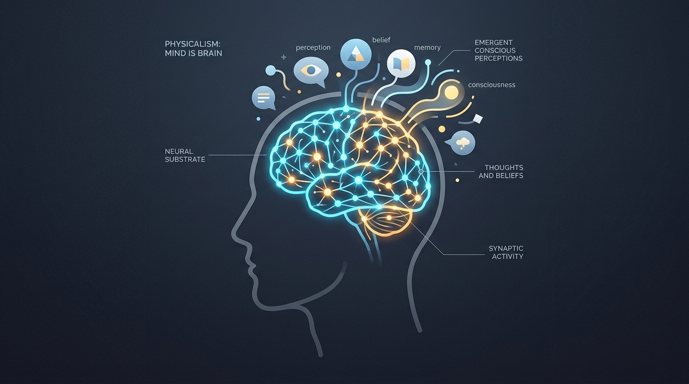
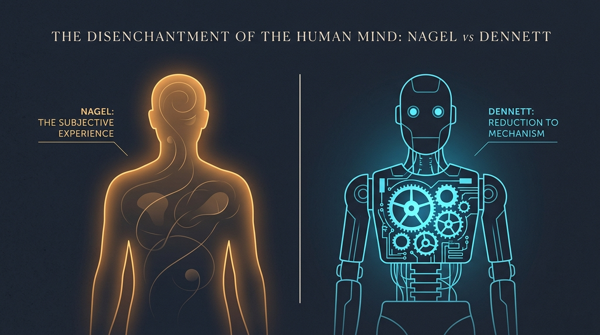

¿Eres tu cerebro?
Tus pensamientos parecen íntimos, subjetivos y propios. Pero ¿qué son exactamente?
Sustrato Biológico en Tiempo Real
Haz clic en el lienzo para disparar potenciales de acción e impulsos entre neuronas:
El caso del examen de mañana
Lee la siguiente situación cotidiana que todos hemos experimentado:
«Mañana tienes un examen decisivo. Miras tus apuntes y piensas que no has estudiado suficiente. Sientes una punzada de preocupación, deseas con fuerza aprobar y decides conscientemente estudiar una hora más».
Descubre el Fisicalismo
La relación entre la materia, la mente consciente y las explicaciones de la vida cotidiana.
«El fisicalismo sostiene que todo lo que existe es físico y que los fenómenos mentales deben entenderse en relación con la realidad física».
En la filosofía contemporánea de la mente, el fisicalismo va mucho más allá de constatar que «un golpe en la cabeza te deja inconsciente». Afirma que no hay sustancias espirituales ni almas flotantes: todo pensamiento, recuerdo o emoción es una manifestación o propiedad del mundo físico y biológico.

1. Relación Mente-Cerebro
- Si un fármaco altera la recaptación de serotonina, tu estado de ánimo se transforma de inmediato.
- Si una lesión cerebral daña el área de Wernicke, pierdes la comprensión lingüística. Para el fisicalismo, la mente está arraigada en la maquinaria cerebral.
2. Estados Intencionales
- Crees que mañana lloverá. Deseas aprobar el examen.
- El gran enigma para la ciencia física: ¿cómo puede un órgano físico de 1,4 kg tener estados que signifiquen cosas y se refieran al futuro?
3. Psicología Popular
- «Laura corrió porque creía que perdía el autobús y deseaba llegar puntual».
- Funciona asombrosamente bien a diario, pero ¿es una teoría científica exacta sobre la arquitectura del cerebro?
Actividad de Discriminación Conceptual
Asigna cada afirmación al concepto filosófico riguroso que le corresponde:
La Analogía Astronómica
De Ptolomeo a Copérnico: ¿Por qué seguimos diciendo que «el Sol sale» si la física sabe que es la Tierra la que rota?
Laboratorio Visual de Perspectiva Astronómica
Compara el modelo geocéntrico histórico con la realidad física heliocéntrica:
La analogía filosófica fundamental:
Durante siglos creímos que el Sol giraba alrededor de la Tierra. La ciencia demostró que era falso. Y sin embargo, hoy en día seguimos diciendo «el Sol sale por el este y se pone por el oeste». Es un recurso lingüístico cómodo y útil que sobrevive al cambio científico sin comprometer a nadie con la astronomía de Ptolomeo.
Pregunta de Razonamiento Epistemológico
Aplica la analogía al problema mente-cerebro:
«Si en nuestra vida diaria seguimos hablando continuamente de "creencias", "deseos" e "intenciones", ¿significa necesariamente que existen como entidades mentales independientes del cerebro?»
Justifica tu razonamiento:
Tres Posiciones Filosóficas
No todos los pensadores materiales piensan igual: compara el fisicalismo amplio, el radicalismo eliminativo y la pragmática evolutiva.
Fisicalismo General
- Rechaza tajantemente cualquier dualismo cartesiano de sustancias inmateriales.
- Admite matices: muchos fisicalistas defienden que los conceptos psicológicos son propiedades emergentes reales o funcionales.
- Importante: No todos los fisicalistas son eliminativistas. Se puede ser fisicalista y considerar legítimo hablar de deseos y creencias.
Paul y Patricia Churchland
- Comparan la mente cotidiana con viejos errores científicos: el flogisto, el éter o los humores corporales. El flogisto no se redujo al oxígeno; se descartó porque no existía.
- En un cerebro maduro investigado por la neurociencia encontramos potenciales sinápticos y tensores neuronales, no 'creencias' ni 'deseos' discretos.
Daniel Dennett
- La metáfora del escritorio: En pantalla ves iconos y papeleras. ¿Hay papeleras de plástico o carpetas dentro del chip? No, solo hay conmutaciones de silicio.
- La interfaz es una «ilusión de usuario» evolucionada: una herramienta admirable para actuar sin necesidad de calcular millones de sinapsis.
- Dennett no afirma que la conciencia sea una nada inexistente, sino que desmonta el error del «teatro cartesiano».
Experiencia Interactiva: El Escritorio de Dennett
Interactúa con el sistema operativo mental y activa el modo físico para ver el hardware subyacente:
Autoevaluación Comparativa: Distinguiendo las tres posturas
Asigna cada tesis a la postura correspondiente (Fisicalismo general, Churchland o Dennett):
Laboratorio de Ideas
Pon a prueba tu rigor filosófico con ejercicios de clasificación, análisis de casos prácticos y debate crítico con Thomas Nagel.
Ejercicio 1: El Clasificador de Teorías (Laboratorio de Muestras)
Arrastra la «Muestra Conceptual» activa o haz clic en la bandeja correspondiente para enrutarla:
Ejercicio 2: Aplicación a un Caso Concreto
Analiza el comportamiento humano desde ópticas teóricas contrapuestas:
«Marta se asoma al balcón, observa nubes oscuras en el horizonte, cree que va a llover, desea no mojarse en el camino hacia la universidad y decide coger el paraguas».
Ejercicio 3: Profundización en la Metáfora del Escritorio
Demuestra tu comprensión de los niveles de abstracción computacional y cerebral:
Ejercicio 4: Pensamiento Crítico con Thomas Nagel
Lectura e interpretación filosófica rigurosa de una crítica contemporánea a Dennett:

Thomas Nagel — El Desencantamiento del Mundo Humano y la Crítica a Dennett
Rúbrica de Rigor Filosófico (Criterios de Corrección Docente):
Verifica si tu respuesta argumentada ha tenido en cuenta estos tres elementos clave:
- Distinción entre crítica y adhesión: Criticar a Dennett por olvidar la subjetividad no obliga a defender la existencia de un alma inmortal o sustancia cartesiana inmaterial.
- Pluralidad de alternativas: Existen opciones como el monismo de doble aspecto (Spinoza, Nagel), el emergentismo ontológico o el fisicalismo no reduccionista.
- El problema de la causalidad: Exigiría analizar cómo concibe el autor la interacción entre las sensaciones subjetivas y las leyes del mundo físico.
Tu Informe de Aprendizaje
Balance personalizado de tu investigación sobre el problema mente-cerebro.
Informe Individual de Competencias Filosóficas
Materia: Filosofía (Bachillerato) · Unidad: Filosofía de la Mente y del Conocimiento
🧭 1. Mi punto de partida
Estas fueron las intuiciones ontológicas que expresaste en la Fase 1 antes de profundizar en las teorías:
✅ 2. Lo que he comprendido con éxito
💡 3. Conceptos que conviene consolidar o revisar
🗺️ 4. Mi Mapa Conceptual: La Red del Debate
✍️ 5. Mi Respuesta Final Argumentada: «¿Eres tu cerebro?»
Ahora que has analizado el fisicalismo, la metáfora del escritorio de Dennett, el eliminativismo de los Churchland y la crítica a la subjetividad de Nagel, redacta tu conclusión filosófica justificada: